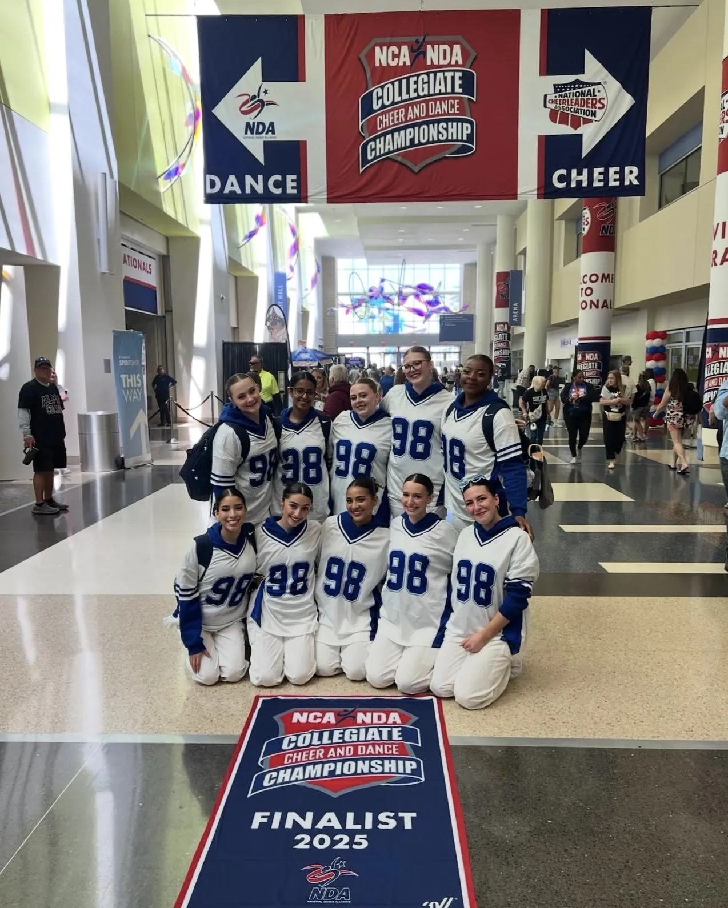
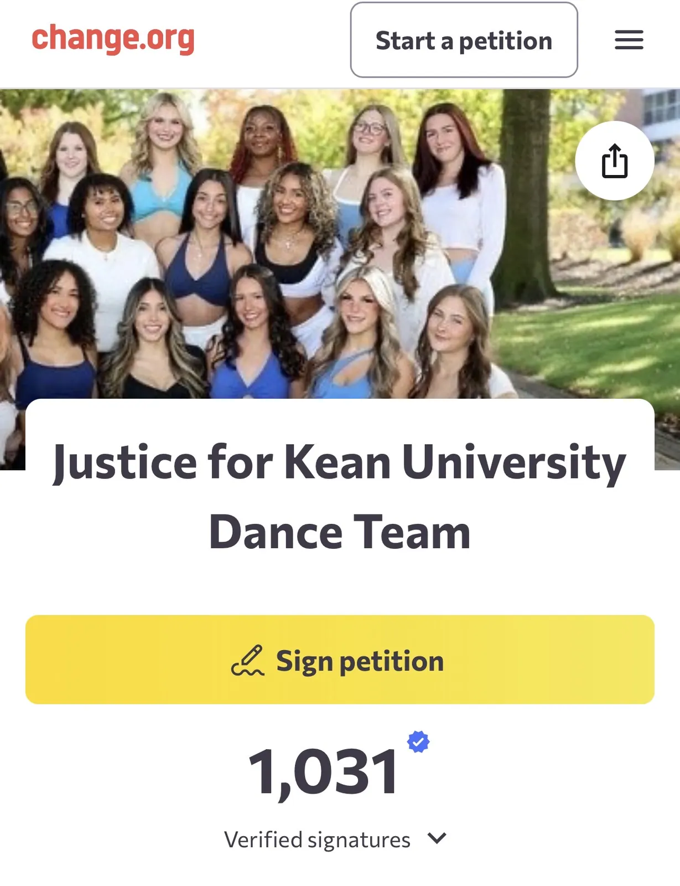

KUDC's Fight for Justice
The Kean University Dance Club (KUDC) is currently under suspension and has accused Kean University of wrongful suspension of their team as well as the absence of fairness, due process, and equity.
As of February 4th, KUDC was suspended for two semesters by the Center for Leadership and Service (CLS), with the inability to attend and compete at nationals until 2028. This suspension follows a report that was submitted to the university on January 7th by the parents of two former members of the club. Within the report, KUDC was accused of hazing tactics and intimidation. It was also alleged that the practice times and requirements for the club (such as weekly study hall, two gyms days per week, and maintaining a 2.5 GPA) were overwhelming and too intense.
The Center for Leadership and Service formally notified KUDC of their decision in a letter detailing what they found the club to be guilty of. Listed in this letter was the overuse of Kean facilities, practice times that exceed the limit of 6 hours, and not submitting said times on Cougarlink. It was also stated that the club's guidelines, detailing all requirements for members, was not specified in the group's constitution nor reviewed or approved by CLS. There was no mention of hazing or intimidation.
An investigation was conducted prior to the suspension, with KUDC President Emeral Neloms and Vice President Marianne Da Fonseca both attending investigation meetings to discuss the accusations. During this time, an interim suspension and no contact order was issued, forbidding the team members from communicating with one another until the investigation was complete.
Tower reporters reached out to University Relations about the ongoing situation. In their response, they stated, "Kean University has established policies governing the conduct of its student organizations and is committed to upholding those standards to support student well- being and accountability. Following complaints regarding the Kean University Dance Club, the Center for Leadership and Service, along with the Office of Student Accountability, Standards, and Education, conducted an investigation in accordance with University procedures. That review found that the organization violated multiple student group policies, including requirements related to its constitution and bylaws, event submission and facility usage. As a result, the Kean University Dance Club has been suspended for two semesters, from February 4, 2026, through December 21, 2026. The organization has filed an appeal, which will be reviewed in accordance with University policy. The University takes these matters seriously and remains focused on maintaining a safe, fair, and respectful environment for all students."

Since their suspension, the club members have been rallying support and speaking out against the administration on various platforms such as Instagram, TikTok, and Change.org. President Emeral Neloms, a senior at Kean, member of the women's soccer team, and founder and captain of KUDC, posted a TikTok on February 5th with the caption, "Kean University dance team needs help 🙏," speaking out about the situation and explaining the club's mission and purpose. The video has since reached over 30k views and received over 5k likes and 300 comments in support of the team.
In a statement made by Neloms on Instagram, she explained, "This decision was made without any prior formal warning, corrective guidance, or opportunity for restorative action, despite the university's stated commitment to restorative justice. The suspension is partially rooted in accusations that we strongly believe are inaccurate and misrepresent who we are as a team." She then goes on to explain that being permitted to practice for 6 hours a week is simply not enough for her competitive team, "As a student-athlete on the women's soccer team, I fully understand the rigor, discipline, and time commitment required to compete successfully. One lesson my soccer coach has consistently emphasized is that winning does not care how tired you are, discipline, preparation, and resilience matter. That same mindset is what built this dance team. This team was founded on love, commitment, and an uncompromising work ethic."
Neloms has also created a Change.org petition named Justice for Kean University Dance Team. Within this petition, she shares that the team operates on zero funding from the university but still aims to represent the university with pride at events such as regionals and nationals. The team has stated that another area of concern is that payments have already been made to attend nationals in April, and now they are currently not allowed to go. Neloms asks people to stand alongside the team and sign the petition in an attempt to overturn the decision made by the administration in regard to their suspension. The petition has received over 1,000 verified signatures and a few comments from supporters.
One supporter states, "Justice for these women that work so hard. College sports are supposed to be challenging and require grit, determination, and resilience. Hoping that this dance team can do what they have been preparing for all year – competing at nationals. Let them dance!!!"
A lot of the team's advocacy and requests for the administration centers around due process and guidance. When asked about the administration's actions, Vice President Da Fonseca stated, "It is difficult to view this action as a learning experience when it feels more like a punitive measure than an opportunity for growth. As a student leader, it is my responsibility to advocate for my organization and for what I believe is fair and just. I do not believe the violations we are being accused of are appropriate, particularly given the lack of institutional support provided to our club. We are committed to learning, improving, and working collaboratively with the university, but we need guidance and resources to do it effectively."

The girls have expressed their frustration with the university's severe measures, stating that they believe they haven't been provided with the guidance needed to run such a competitive team while adhering to the university's policies.
KUDC was initially founded on the basis that Kean University did not have a competitive dance team that attended regionals and nationals to represent them. Neloms has explained that she took the time to research how other university's competitive dance teams run and executed her club around that. However, with the competitive nature of a club like this, she shares that long practice times, funding, and constant preparation are necessary to succeed. She feels as though the university did not guide her nor any of the e-board members on how to best accommodate the policies of the university while still being able to successfully run a competitive dance team before resorting to the suspension of the club entirely.
The most recent action made by the club has been an appeal given to the Center for Leadership and Service on February 5th. While the girls await the university's decision, they are continuing to spread awareness and advocate for their club.
A joint statement by members Alexia Hilarczyk, Riley Thomas, Ruby Crowell, Anna Walmsley, and Kalise Miller, states, "This team isn't just a team; it is a family. We've built strong connections between the members and have grown tremendously alongside one another. We believe this suspension prohibits us from succeeding as a team and individually."